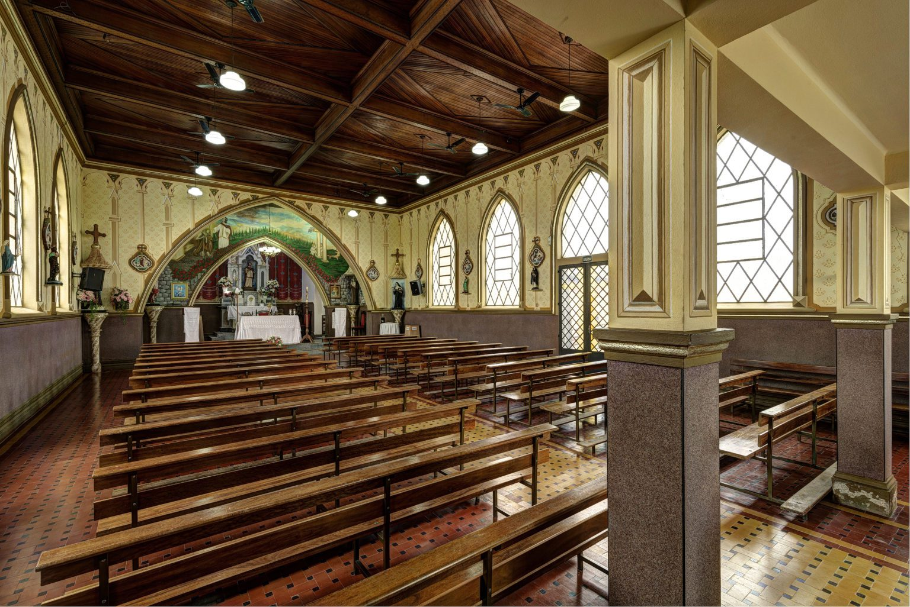
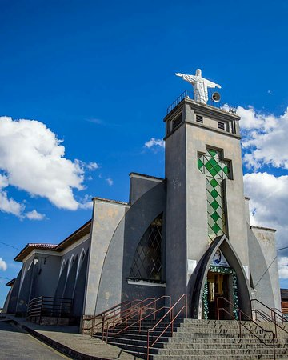

A Igreja de Santa Luzia localiza-se no bairro rural de mesmo nome na cidade de Espírito Santo do Pinhal / SP. A região onde se situa era conhecida – em fins do século XIX – como Bairro Morro Azul e fazia parte da Fazenda Monte Alegre de propriedade do tenente-coronel Vicente Gonçalves da Silva, que herdara de familiares. Em 1868, o tenente-coronel casou-se com Francisca Tomázio – carinhosamente chamada de Chiquinha Ramos. Segundo consta, dona Chiquinha era mulher religiosa e os últimos anos de sua existência “foram consagrados ao bem”. Essa religiosidade alcançou maior expressividade quando ela passou a se preocupar com colonos e conhecidos que tinham problemas na visão. Na ânsia de ajudá-los, dona Chiquinha dedicou-se às orações e à devoção a Santa Luzia, a santa protetora dos olhos. O marco da devoção a Santa Luzia ocorreu em 1908, com a chegada da imagem da Santa em sua residência. A imagem veio de Fuscaldo (Itália) através da Estação Ferroviária Mogiana. Existem várias versões sobre a vinda da imagem de Santa Luzia. Alguns dizem que foi uma encomenda de dona Chiquinha. Outra que foi um presente de seus familiares. Sendo a imagem de tamanho natural, não foi possível Chiquinha colocá-la no oratório de seu quarto, então resolveu construir (1909-1910) uma capelinha para abrigar a Santa dos Olhos. Era uma capela que comportava cerca de trinta pessoas em pé. Na entrada existia um espaço elevado reservado para o coro, no chão mosaicos brancos e pretos e no altar de madeira a imagem vinda da Itália ocupava o seu lugar. Nos vitrôs, vidros coloridos e o teto forrado de madeira. Esta primeira capela foi construída por dois filhos de um imigrante italiano da família Cavalheiro. Antes mesmo da inauguração no ano de 1909, foi realizada uma grande festa patrocinada por dona Chiquinha que contratou músicos para animar o evento, tendo sido realizada, também, uma novena, costume este, que perdura até os dias atuais. A primeira missa foi rezada pelo Pe. Guilherme Landel de Moura no dia 13 de dezembro de 1910, da qual participaram os proprietários da Fazenda Morro Azul e seus familiares, bem como toda a colônia italiana ali moradora. A partir de então, tornou-se tradição a realização da festa todo dia 13 de dezembro, que ano após ano, foi crescendo, e que hoje é o maior acontecimento religioso da região. Contando sempre com a participação de milhares de devotos de Espírito Santo do Pinhal, das cidades vizinhas, do Sul de Minas Gerais e da Grande São Paulo, que chegam ao local do evento a pé, de carro ou de ônibus para agradecer bênçãos recebidas da padroeira da boa visão. Nos primeiros anos, a festa de Santa Luzia foi promovida por D. Chiquinha Ramos e por familiares e depois pelos imigrantes italianos que trabalhavam na Fazenda Morro Azul. A comunidade recebeu desde então assistência espiritual dos Padres João Ambrósio e Monsenhor José Jeronimo Balbino Fucciolli, que iniciaram a congregação Mariana no Bairro.
 